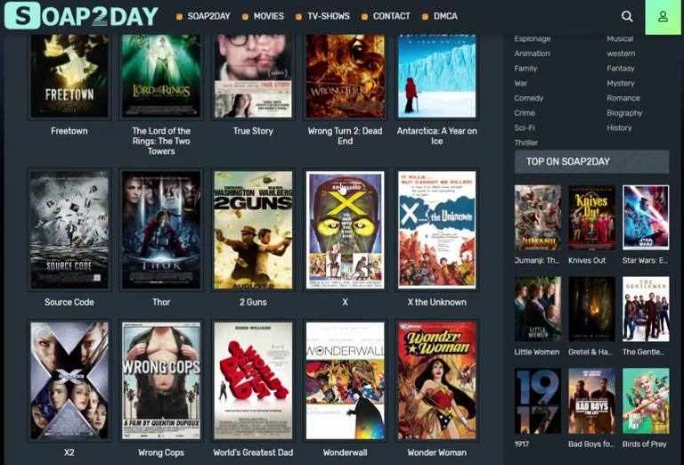

Watch Movies Online and Bring the Stars to Your Home
Movie watching is fun, especially when you can do it from the comfort of your home. But, there are many sites that allow you to watch movies online.
Common surfers are not familiar with how to stream movies online. It's easy to access online movies with a laptop or PC and an internet connection. You can watch movie trailers online and also check out showtimes for nearby cinemas. Online movie portals are a Pandora's Box. Check out what they have in store.
Some movies can be rented online instantly. The movie can be streamed to your TV, Xbox, soap2day PlayStation, or PC instantly. This is great for those who want to instantly watch a movie and don’t want it to arrive in the mail. The library of streaming titles available is much smaller than Netflix's 100,000+, but there are more new films added each day.
Internet is the main resource for all online movie portals. Since internet broadband, DSL, modem etc. Internet broadband, modem, and DSL have all become household terms. You can now enjoy online movies. The cinema experience is no longer limited to televisions and theatres. You can also enjoy the latest blockbuster films in your own home with internet connectivity. The first movie that hit theatres was a big success. People sat in front of the huge screen with a tubful of popcorn in their hands and a boatload in their pockets.

How do you stream movies directly to your TV? soap2day movies To make this work on your TV, you will need a special device. Movies can be viewed on TV in the same manner as they are on your computer over the internet.
Online movie streaming allows you to enjoy the same movie with HD picture quality and Dolby surround sound in the comfort of your own home. This is a far better option than paying at the theatres. Online movie portals offer additional features to go along with the movie. Online access to movie trailers, star interviews and show times, as well as online bookings can be made. You get to review the movie before purchasing, even when you have to book it for a minimum of a number of categories. It's always a win/win situation for customers and the print and sound quality is better than a CD/DVD.
You don't need to burn anything or stream any video online. This is the most important technical aspect of watching movies online. The process is straightforward. All you need to do to get the titles is log in. You will need to follow certain steps when you watch movies online. Here are some quick and simple instructions to help you get movies online.